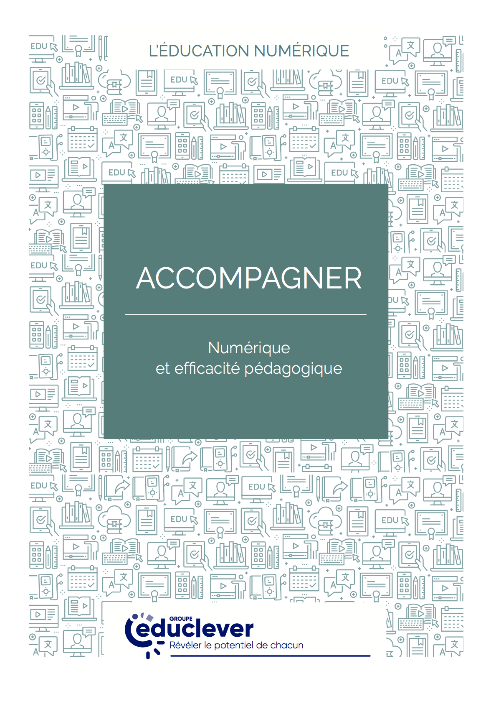
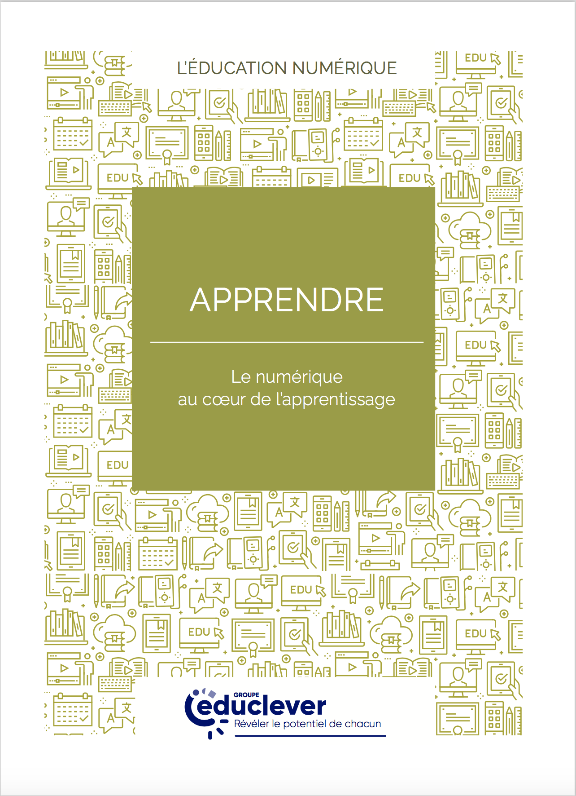
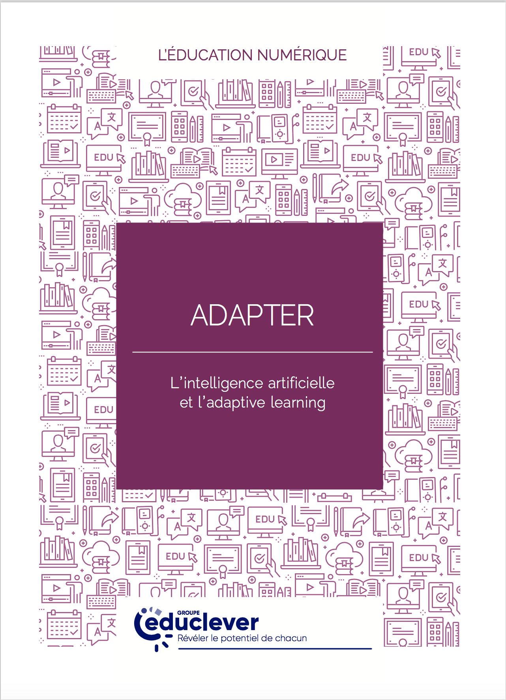
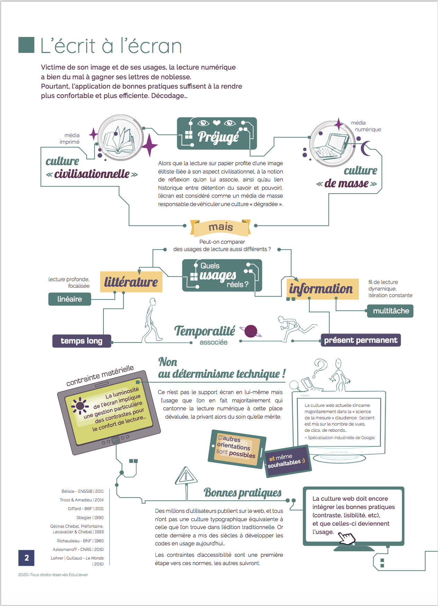
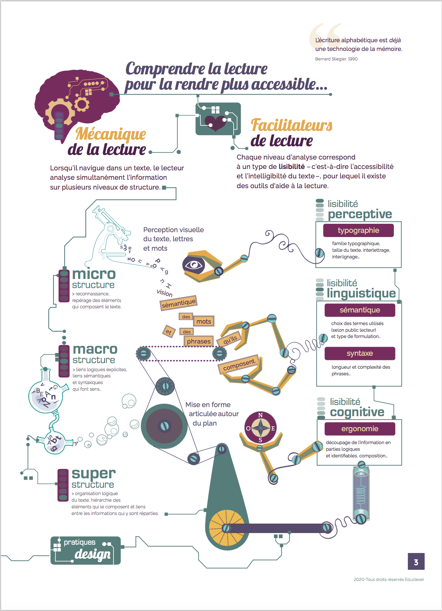
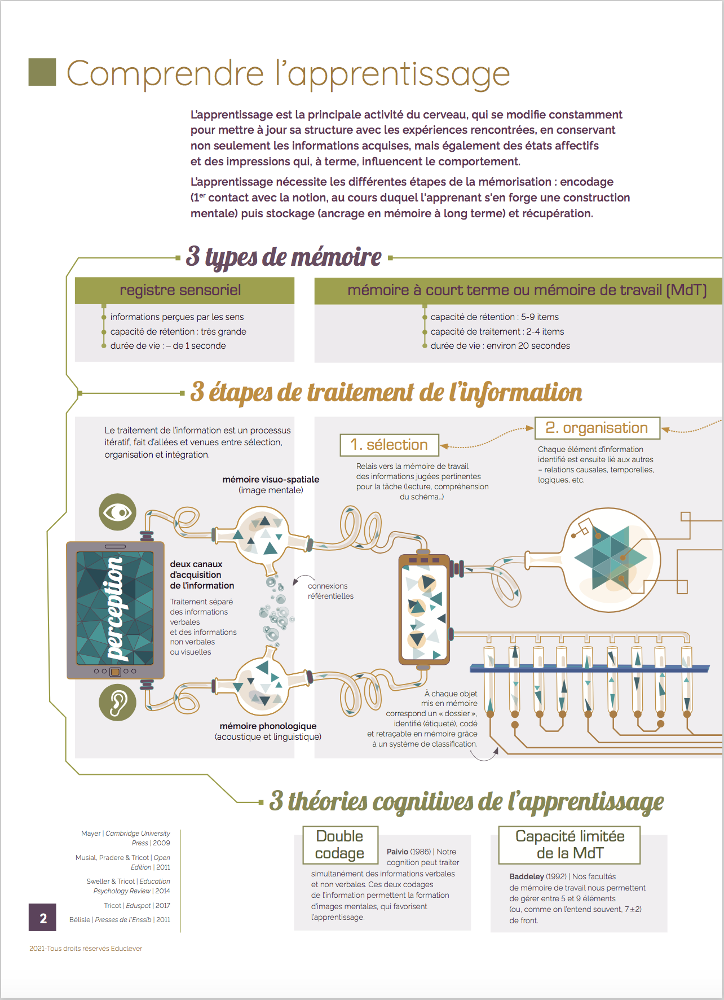
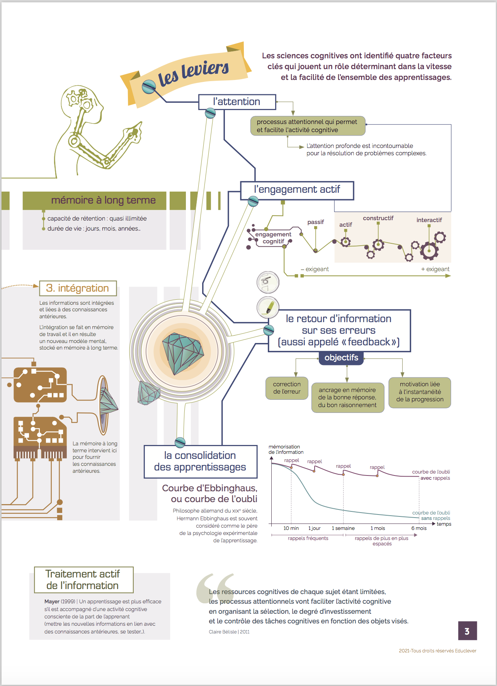
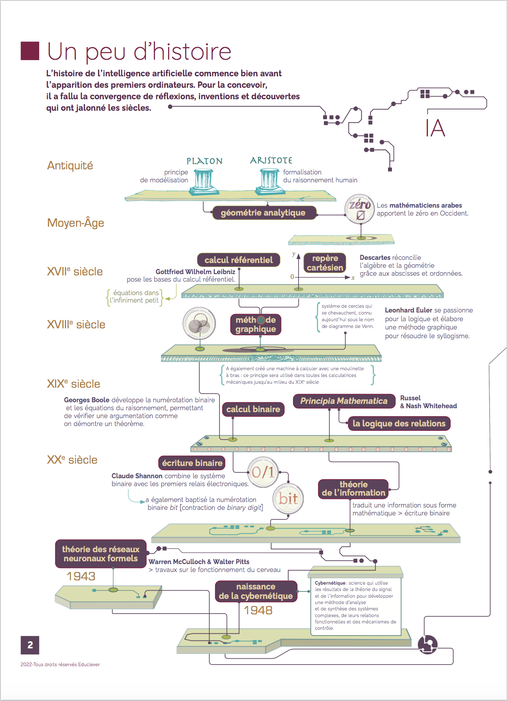
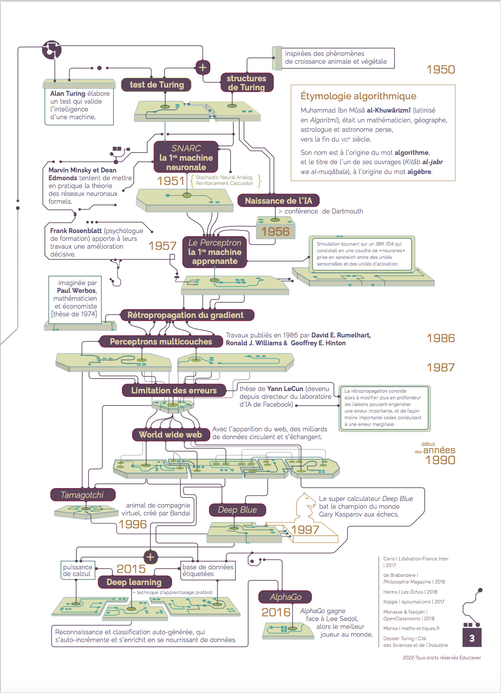

Les livres blancs d'Educlever
Présenter un état de l'art des recherches et publications du domaine de l'apprentissage multimédia et mise en perspective avec les solutions apportées chez Educlever. Chaque notion est présentée dans une double page, texte et infographie.
Accompagner
Numérique et efficacité pédagogiqueAnalyser la lisibilité des contenus pédagogiques à tous les niveaux : lisibilité matérielle et cognitive, de la micro-structure à la super-structure, niveaux d'information, scénario pédagogique, etc. • 2020


Apprendre
Le numérique au cœur de l’apprentissageComprendre les mécanismes cognitifs de l'apprentissage et concevoir les sytèmes technologiques et les ressources pédagogiques les plus à même d'y répondre • 2021


Adapter
L’intelligence artificielle et l’adaptive learningComprendre le principe d'adaptive learning, ses atouts pour l'apprentissage et les contraintes d'un tel système • 2022


Documentation, sélection des infos, définition d'un fil rouge et écriture du premier jet
Coordination du travail en équipe pour la structuration édito
Rédaction de tout (Accompagner) ou partie des livres blancs,
coordination des rédactions et des contributions
Conception et réalisation – infographies et maquette
Vérification des sources
Coordination de la relecture éditoriale
Educlever, 2020-2022